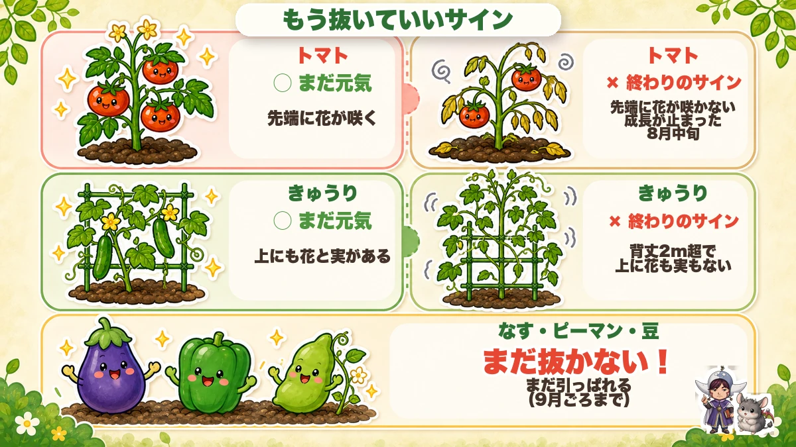
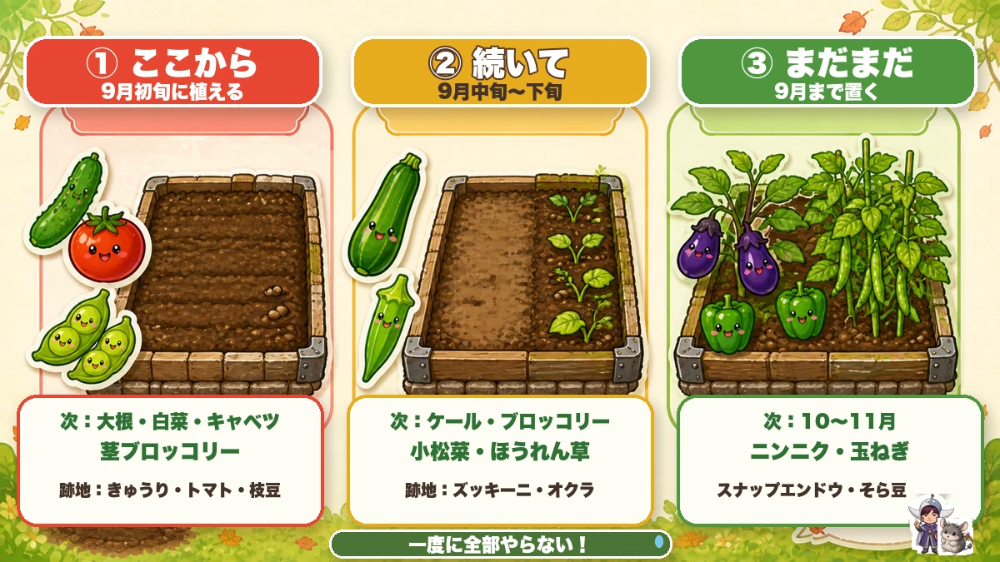
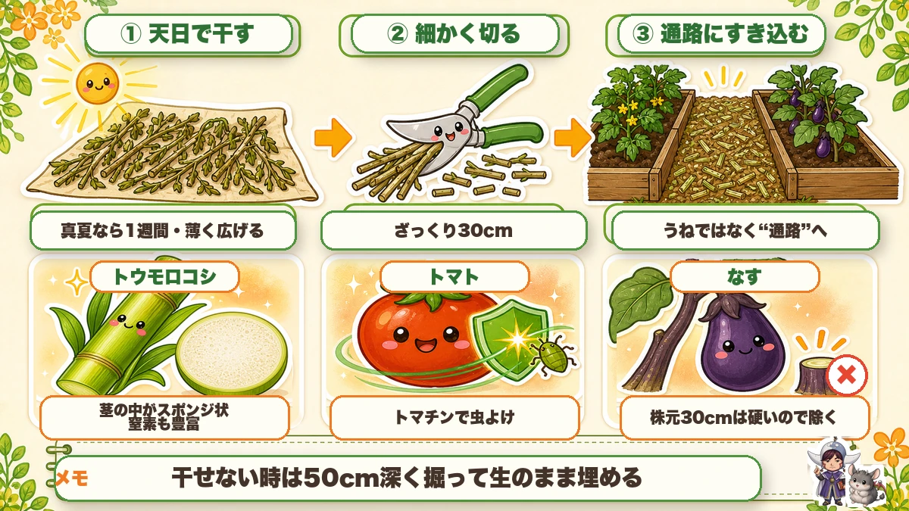
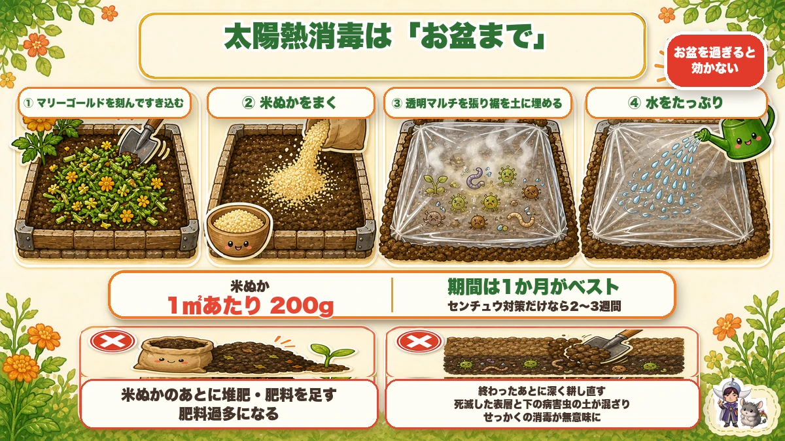
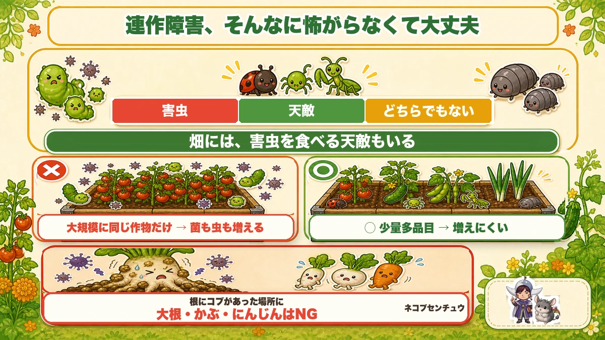
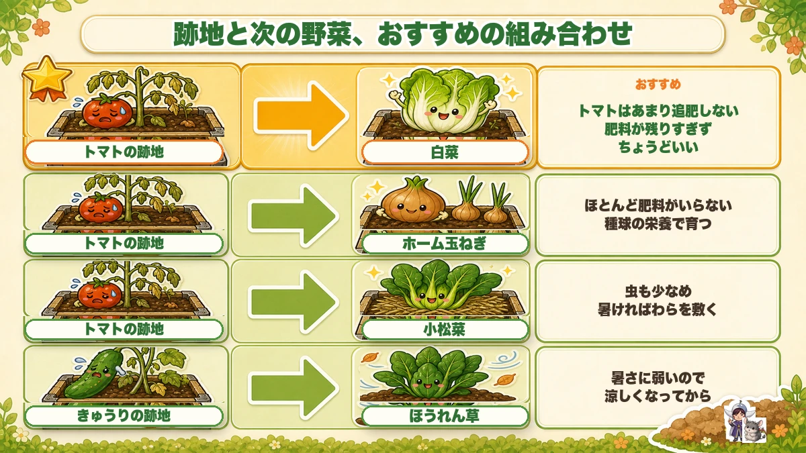
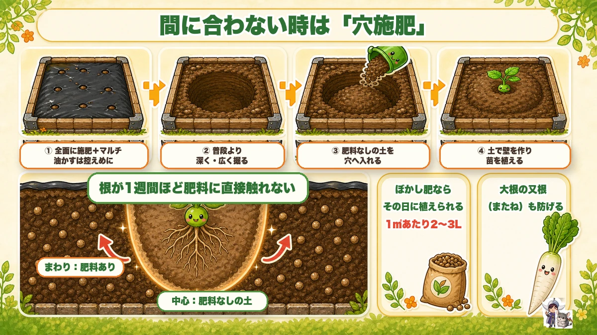

夏野菜の片づけ方｜終わりの見きわめ、片づける順番、残りの活用、太陽熱消毒、連作、秋冬への切り替え
📖 この記事の目次
この記事で分かること
- 夏野菜をいつ終わりにするかは、日付ではなく、株の状態と、次に植える秋冬野菜の時期から考えます。
- 秋冬野菜は、9月の初めから中旬にかけて植えつけることが多く、そこから逆算すると、8月の中旬から下旬には片づけと土づくりを始める必要があります。
- トマトは、先のほうに花が咲いても実がつかなくなったら、終わりの目安です。元気ななすやピーマンは、秋まで収穫を続けることもできます。
- 片づけるときは、茎を上から短く切ってから、根を取り出します。根にこぶがないか、病気が出ていないかも確かめます。
- 病気の出ていない茎や葉は、乾かして細かく刻めば、通路にすき込んだり、堆肥にしたりして生かせます。
- 夏の強い日差しを使った太陽熱消毒で、病原菌や雑草のタネを減らす方法もあります。
8月も半ばを過ぎると、あれほど元気だったトマトやきゅうりも、少しずつ勢いがなくなってきます。「まだ実がなっているけれど、いつ抜けばいいんだろう」「暑い中で全部片づけるのは大変」「抜いたあとの土はどうすればいいの」。そんなふうに悩む方も多いと思います。
夏野菜の片づけは、秋冬野菜をうまく育てるための大切な準備でもあります。片づけのタイミングと、そのあとの土の手入れしだいで、秋冬野菜の育ち方が大きく変わってきます。この記事では、夏野菜を終わりにする見きわめから、片づけの順番と手順、残りの活用、太陽熱消毒、連作障害の考え方まで、順番に書いていきます。説明が分かれているところは、両方の考え方を並べておきますね。

早見：夏野菜の片づけの基本（ひと目で分かる目安）
終わりのサイン
- トマト：先のほうの花が咲かなくなる、または咲いても実がつかない
- きゅうり：株が弱って、花や小さな実が落ちるようになる
- なす、ピーマン：暑さが落ち着くと回復することがある。元気なら秋まで続けられる
時期の目安
- 秋冬野菜の植えつけ：9月初め〜中旬
- 片づけと土づくりの開始：8月中旬〜下旬
- 土づくりは、タネまきや植えつけの2〜3週間前に
片づけのポイント
- 茎は上から短く切ってから、根を取り出す
- 根にこぶがないか、病気が出ていないかを確かめる
- 病気の株は、畑に戻さず処分する
- 元気な残りは、乾かして刻み、通路や堆肥に生かす
夏野菜、いつ終わりにする？
日付ではなく、次の野菜から考える
夏野菜を終わりにする時期は、何月何日と決まっているわけではありません。大切なのは、次にその場所で何を育てるかです。
秋冬野菜の植えつけはタイミングが厳しく、遅れると十分に育たず、早すぎると暑さでやられてしまう、と説明されます。目安として、9月の初めに土づくりを始めて、9月の中旬までには植えつけを終えておく必要がある、という説明があります。
1週間の遅れが、1か月の遅れに
秋冬野菜のタネまきは、8月の終わりごろから始めなければならない野菜もあります。タネまきのタイミングを1週間逃すと、収穫が1か月遅れることがある、という説明もあります。土づくりは、タネまきの時期の3週間前には始める、という目安です。
だから、秋冬野菜を植える場所の夏野菜は、8月中旬、遅くとも8月の終わりごろには片づける、という説明があるわけです。
トマトの終わりのサイン
トマトは、8月中旬になると、ほとんど終わりを迎える、と説明されます。先のほうは伸びているけれど、花がほとんど咲かなくなってきたら、トマトの栽培は一区切りです。
先のほうに新しい花が咲いていても、実がつかない場合や、花が咲いてから赤くなるまで待っていると秋冬野菜の植えつけに間に合わない場合は、片づけを考えます。花が咲いてから実が赤く熟すまでには時間がかかるので、そのあいだに秋冬野菜の適期を逃してしまうことがあるからです。
葉が枯れはじめたら
病気や暑さで、葉が枯れだしている株は、なかなか復活は難しい、と説明されます。株の一部がそうなってきたら、終わりの時期が近いと考えましょう。
きゅうりの終わりのサイン
きゅうりは、先のほうの花や実、葉の様子を見て判断します。花や小さな実が残っていても、株が弱って花が落ちるようになったら、片づけの時期です。
ただし、孫づるが伸びて新しい実がたくさんつくようになった株は、上手に世話をすれば、9月いっぱい収穫できることもある、と説明されます。
なすとピーマンは、秋まで続けられることも
なすやピーマンは、暑さが落ち着いてくると回復して、秋まで収穫を続けられることがあります。実がついて成長が続いている元気ななすなら、10月中旬ごろまで収穫できる、という例もあります。
一方で、植えつけが遅れて育ちが悪いなすや、葉が落ちてしまったピーマンは、収穫を待たずに片づけて、次の野菜に切り替える、という判断もあります。全部の株を同じように扱わず、株ごとに元気さを見て決めましょう。
なすの更新剪定は、早めに
なすを切り戻して秋なすを楽しむ「更新剪定」は、8月後半に行うと、収穫までに1か月以上かかるので、秋なすの時期を逃してしまう、と説明されます。秋まで続けるなら、早めに切り戻しておきましょう。

片づける順番は、次の野菜から逆算する
秋冬野菜を植える場所から先に
片づける順番は、次にその場所に何を植えるかで決めます。9月上旬にブロッコリーやレタス、キャベツの苗を植える予定の場所なら、8月中旬から夏野菜を片づけて、土づくりを始める、という例があります。
一方、秋冬野菜を植える予定が遅い場所や、まだ使わない場所なら、元気ななすやピーマンを秋まで残しておくこともできます。
畑の計画を立て直す
8月に入ったら、畑の地図を見ながら、どこに何を植えるか、秋冬の計画を立てましょう。そのうえで、片づける場所と、残しておく場所を決めます。収穫が落ちてきた夏野菜をそのまま残しておくと、キャベツや白菜などの秋冬野菜の植えつけが遅れてしまう、という注意もあります。キャベツや白菜のように葉が巻く野菜は、植えつけが遅れると、葉が十分に大きくなる前に寒くなって、うまく巻かなくなってしまうからです。
秋冬野菜の準備の流れ
秋冬野菜の準備は、次の5つに分けて考えると分かりやすい、と説明されます。
- 計画：どこに何を植えるかを決める
- 片づけ：夏野菜を撤去する
- 残りの処理：茎や葉、根を片づける
- 土づくり：土を耕し、肥料を入れる
- 畝作り：畝を立てて、マルチを張る

片づけの手順と、根と病気の確かめ方
片づけの前に、最後の収穫を
片づけると決めた株は、まず、ついている実を全部収穫しましょう。小さな青いトマトも、炒め物やピクルスなどに使えます。きゅうりやなす、ピーマンも、小さめのものまで収穫しておきます。最後の収穫を楽しんでから、片づけに取りかかりましょう。夏のあいだ、たくさん実をつけてくれたことに感謝しながら。
手順1：支柱やひもを外す
まず、支柱や誘引のひもを外します。ひもが茎に食いこんでいる場合は、はさみで切って外しましょう。支柱を抜くときは、根を一緒に引っぱり上げないように、ゆっくり抜きます。トマトなら、茎を先に切ってから支柱を抜き、そのあとで根を取り出す、という順番が紹介されています。
手順2：茎を上から短く切る
株を根から一気に抜くのではなく、上から短く切っていく方法が紹介されています。30cmくらいの長さに切って、葉を落とし、手で持てる部分を少し残して、最後に根を抜く、という手順です。太い茎は、そのまま捨てると分解に時間がかかります。
手順3：根を取り出す
根は、太いものは取り除いて整理します。細かい根は、そのまま土に残しておくと養分になる、という説明もあります。
手順4：根をよく見る
根を取り出したら、よく観察しましょう。根の様子からは、その夏に土の中で何が起きていたかが分かります。
- 根が伸びていない：根が腐っていたか、虫の幼虫に食べられていた可能性
- 根にこぶがある：ネコブセンチュウという小さな虫の被害の可能性
ネコブセンチュウのこぶがあった場所には、大根を植えない、という説明があります。根菜は、根のこぶの影響を受けやすいからです。
ただし、枝豆やいんげんなど、豆の仲間の根についている丸いこぶは、根粒菌のすみかなので問題ありません、と説明されます。豆の根粒と、ネコブセンチュウのこぶを、間違えないようにしましょう。
手順5：病気の株は、畑に戻さない
病気が出た株は、土に残さず、すぐに袋に入れて捨てるか、残渣置き場でしっかり分解させる、と説明されます。葉に斑点が出ていたり、株全体が急にしおれていたり、実が腐っていたりした株は、病気を疑いましょう。病気かなと思うものは、ビニール袋に入れて、畑の外に持ち出しましょう。病気の株を、生のまま畑にすき込むのは避けます。
抜いた茎や葉を、生かす
残りは、土をよくする材料になる
病気の出ていない夏野菜の茎や葉は、捨てずに生かすことができます。夏野菜の残りを土に戻すと、土の状態や通気性がよくなる効果が期待できる、と説明されます。
乾かして、細かく刻む
残りを生かすには、乾かすことが大切です。真夏なら、薄く広げて1週間ほど干すと、からからに乾きます。雨や長雨に当てないようにしましょう。乾いたら、10〜20cmほどに刻みます。細かいほうが、分解が早く進みます。
トマトの茎やきゅうり、ピーマンなどはやわらかいので、細かく切れば分解が早まりますが、なすの枝はかたいので気をつけたほうがよい、と説明されます。
残りを畝のまわりに置いて乾かす
乾かす場所がない場合は、残りを畝のまわりに置いておくだけでも、しばらくするとからからに乾く、と説明されます。土をしばらく使わない場所なら、残りを細かくして、そのまま土に入れてしまってもよい、という説明もあります。ただし、すぐに野菜を植える場所に、生の残りを大量に入れるのは避けましょう。分解の途中で、野菜の根に悪い影響が出ることがあります。
通路にすき込んで、水はけをよくする
秋冬は長雨で、根が腐ったり病気になったりしやすい季節です。秋の野菜を植える前に、水はけをよくしておくことが大切です。その対策として、乾かして刻んだ夏野菜の残りを、畑の通路にすき込む方法が紹介されています。通路を30cmくらいの深さに掘って、残りを入れて埋め戻します。土が硬い場合は、50cmくらい掘る、という説明もあります。
通路に有機物が入ると、そこから水が抜けやすくなり、畝の水はけがよくなる、という考え方です。
タネのついた雑草は入れない
雑草も一緒に土に戻したくなりますが、タネができてしまった雑草は、すき込まないほうがよい、と説明されます。土の中でタネが生き残って、翌年また生えてきてしまうからです。タネになる前の雑草なら大丈夫です。8月から9月にかけて、ほとんどの雑草が花を咲かせてタネを作るので、その前に抜いておきましょう。
残りを堆肥にする
残渣置き場で堆肥にする
畑のすみに残渣置き場を作って、残りを堆肥にする方法もあります。ときどき上と下を入れ替える「切り返し」をし、ブルーシートなどで覆って、雨水が入らないようにしておきます。
米ぬかを少し混ぜると、米ぬかが発酵するのと同時に残りも発酵して、早く土に変わる、と説明されます。ただし、生の米ぬかは、虫がわいたり、ネズミが食べに来たり、いやなにおいがしたりして、使いづらいこともあります。
発酵の熱で、病原菌を減らす
残りの堆肥は、発酵すると温度が60度くらいまで上がり、ほとんどの病原菌が死滅する、と説明されます。ただし、温度が下がったあとに、虫の幼虫が入ることもあります。病気の株を生のまま畑に戻してよい、という意味ではないので、気をつけましょう。
穴を掘って堆肥にする
畑のすみに穴を掘って、残りを堆肥にする方法もあります。10平方メートルくらいの畑なら、60cm四方、深さ50cmくらいの穴に、20cmくらいに切った残りを入れ、米ぬかや油かす、鶏ふん、土を重ねていく、という例があります。5〜6か月から1年ほどで、野菜によい土に戻っていく、と説明されます。
肥料袋で、小さな残渣置き場を作る
畑が狭い場合は、使い終わった肥料の袋に土を8分目まで入れて並べ、その中に小さく切った残りを入れて踏み、30cmほどごとに米ぬかをはさんで、雨よけをしておく、という方法も紹介されています。1年ほどで堆肥になる、という説明です。
段ボールで堆肥にする
畑の外で処理したい場合は、段ボール箱に、野菜の残りと米ぬか、腐葉土などを入れて、雨の当たらない場所に置いておく方法もあります。半年ほどで発酵する、という見込みが紹介されています。
深く埋めて、土を入れ替える
土が硬い、水はけが悪い、根の張りが悪い、という場所では、深い穴を掘って、底に残りを入れ、表面の土と深いところの土を入れ替える（天地返しをする）方法もあります。穴は50〜60cmほどの深さに掘り、表面の土と深いところの土を分けておきます。残りを入れて踏み、ぼかし肥料や米ぬかを少し加えてから、表面の土を下に、深いところの土を上に戻します。
残りで液肥を作る
夏野菜の残りを細かく刻んで、液体の肥料（液肥）を作る、という例もあります。きゅうりやトマト、ピーマン、しそ、なす、オクラなどの残りを刻み、残り1kgに対してぼかし肥料をスプーン5杯ほど混ぜて、水につけておく、という方法です。夏なら1週間ほどで残りの形がなくなっていく、と説明されています。
堆肥を使う前に、ふるう
できた堆肥は、使う前にふるいにかけて、分解しきれなかった太い茎や、マルチの切れ端、コガネムシの幼虫などを取り除きます。
急ぐときは、熱湯や2週間の太陽熱で
できた堆肥を急いで使いたい場合は、ふるいにかけたあと、60度以上の熱湯をかけてから乾かす方法や、ビニールをかぶせて2週間ほど太陽熱で消毒する方法も紹介されています。

太陽熱消毒
夏の日差しで、土を温める
夏野菜を片づけたあとの畑で、夏の強い日差しを利用して土の温度を上げ、病原菌や害虫の卵、雑草のタネを減らす方法があります。これを太陽熱消毒と呼びます。
太陽熱消毒の手順
- 次に育てる野菜に合わせた肥料を入れて、耕す
- 水をたっぷりやる（どろどろになるくらい、という説明も）
- 透明のマルチやビニールで畝をおおう
- まわりを土でしっかり押さえて、すき間をなくす
- そのまま、決めた期間置いておく
透明でないと意味がない、と説明されます。黒いマルチでは、日光が土まで届かず、温度が十分に上がらないからです。
期間の目安
期間の目安は、説明によって違います。
- 3週間から1か月
- 最低2週間、できれば1か月
- 涼しい地域では1か月半ほど、関東より南の暖かい地域では1か月程度以上
- 土の温度を55〜60度以上に保てるなら2〜3週間
夏の30度を超える日なら、透明なビニールの中は50〜60度になる、という説明があります。実際に測ったら、外の気温34度のとき、中が55度まで上がった、という例もあります。
マリーゴールドと組み合わせる
太陽熱消毒のときに、育てたマリーゴールドを細かく刻んで、米ぬかと一緒に土に混ぜ、透明マルチで1か月ほどおおう、という方法も紹介されています。根に入りこむ線虫の対策が目的なら、2〜3週間でもよい、という説明です。
終わったら、深く耕さない
太陽熱消毒が終わったあとは、深く耕さないように、と説明されます。深く耕すと、十分に温度が上がらなかった下の土が表面に出てきて、消毒の効果が薄れてしまうからです。耕すなら、15cmくらいの深さまでにしておきます。
肥料を重ねすぎない
米ぬかを入れて太陽熱消毒をしたあとに、さらにたい肥や肥料を入れると、肥料が多すぎになる可能性がある、と説明されます。米ぬかにも肥料分が多いからです。何をどれだけ入れたか、メモしておきましょう。
太陽熱消毒が効かないもの
万能に見える太陽熱消毒ですが、効くものと効かないものがあります。太陽熱消毒は、カビの仲間の病原菌や、害虫の卵や幼虫、線虫、雑草のタネを抑えるのに効果がある一方で、細菌やウイルスには効果がない、という説明があります。また、深いところの硬い土の水はけは、太陽熱だけでは直りにくい、と説明されます。

連作障害の考え方
連作障害とは
同じ場所で、同じ野菜や同じ仲間（科）の野菜を続けて育てると、土の中の肥料分がかたよったり、病気や害虫が増えたりして、育ちが悪くなることがあります。これを連作障害と呼びます。前に育てた野菜の病気や害虫、根から出る成分、肥料のバランスが原因になる、と説明されます。
少量多品目なら、気にしすぎなくてよい、という考え方
有機・無農薬で、少量ずついろいろな野菜を育てている限り、連作はあまり気にしなくてよい、という立場もあります。土の中の微生物がすみやすい環境を作り、いろいろな野菜を育てて多様性を保ち、残りの堆肥を使うことで、かたよりが起きにくくなる、という考え方です。
同じ仲間は避ける、という考え方
一方で、まず同じ仲間の野菜は避けるようにしてください、という説明もあります。たとえば、トマトやなすなどナス科の野菜のあとに、同じナス科の秋じゃがいもを植えない、という例です。
育ちが悪い原因は、連作だけではない
野菜の育ちが悪いとき、原因は連作障害だけとは限りません。水はけの悪さ、肥料のやりすぎ、植える間隔のつめすぎ、風通しの悪さなども、育ちが悪くなる原因になる、と説明されます。
連作障害の対策
連作障害の対策としては、次のようなことが挙げられています。
- 残りの堆肥を使って、土の中の微生物を増やす
- いろいろな種類の肥料を使う
- 病気に強い品種や、接ぎ木苗を選ぶ
- 太陽熱消毒をする
- マリーゴールドや緑肥を育てる
- 違う仲間の野菜を混ぜて植える

跡地に、次の野菜を植える
前の野菜と、違う仲間を
夏野菜の跡地には、できるだけ前の野菜と違う仲間の野菜を植えると安心です。ナス科のあとなら、アブラナ科のキャベツや白菜、大根、小松菜など、違う科の野菜を選びましょう。
跡地に植える秋冬野菜の例
- 苗で植える野菜：キャベツ、白菜、ブロッコリーなど。9月の初めから中旬にかけて植えつけることが多い
- タネをまく野菜：大根、かぶ、小松菜、水菜、ほうれん草など。8月の終わりから9月にかけてまく野菜が多い
大根は、だいたい3mmくらいのタネを、1cmくらいの深さにまく、という説明があります。それぞれの野菜のまき時は、タネの袋で確かめましょう。秋冬野菜は、まき時や植えどきの幅が短いものが多いので、袋の時期を守ることがとても大切です。
肥料は、次の野菜に合わせて
畝を作るときには、必ず次の野菜に合わせた肥料を入れてください、という説明があります。一方で、肥料の入れすぎも心配なので、必要なら後から追肥で調整する、という考え方です。冬野菜をすぐに育てる場合は、米ぬかと何種類かの肥料を入れて、そのまま植えてもよい、という説明もあります。
土づくりの流れ
土を30cmくらい掘り返して、前の野菜の根や害虫を取り除き、肥料を入れて、もう一度耕し、2〜3週間置く、という流れが紹介されています。太陽熱消毒をする場合は、さらに3〜4週間早めに準備を始めます。

土づくりが間に合わないとき
植え穴だけに肥料を入れる
片づけが遅れて、土づくりの時間がとれない場合は、植え穴だけに肥料を入れる方法（穴肥）があります。植え穴を深めに掘って、底に肥料を入れ、その上に肥料の入っていない土をかぶせてから、苗を植えます。肥料が直接根にふれないようにするのがポイントです。
苗選びで取り返す
秋冬野菜の苗を買うときは、茎がしっかりしていて、根がしっかり張っていて、葉が十分に育っているものを選びます、と説明されます。青虫に食べられたあとや、卵が産みつけられたあとがある苗は避けましょう。よい苗を選べば、少しくらい植えつけが遅れても、取り返しやすくなります。
8月の畑の流れ（例）
秋冬野菜に向けた、8月から9月の畑仕事の流れの例です。地域や、秋冬に育てる野菜によって前後するので、目安として読んでください。
8月上旬：計画を立てる
畑の地図を見ながら、秋冬にどこで何を育てるかを決めます。そのうえで、早めに片づける場所と、秋まで残す場所を分けます。
8月中旬：片づけと残りの処理
秋冬野菜を植える場所の夏野菜を片づけます。根や病気の株を確かめ、元気な残りは干して乾かします。太陽熱消毒をするなら、このころから始めます。
8月下旬：土づくり
土を掘り返して、根や害虫を取り除き、肥料を入れて耕します。秋冬野菜のタネまきや植えつけの2〜3週間前までに済ませておきます。
9月上旬〜中旬：畝作りと植えつけ
畝を立て、マルチを張って、秋冬野菜のタネをまいたり、苗を植えたりします。9月中旬までには植えつけを終えておくのが目安です。乾かした残りは、刻んで通路にすき込んでおきましょう。
失敗の見分け方
秋冬野菜の植えつけが遅れた
夏野菜を片づけるのが遅れた可能性があります。次の年は、8月に入ったら秋冬の計画を立て、植える場所の夏野菜を早めに片づけましょう。
跡地に植えた大根の根が、こぶだらけになった
前の野菜の根にネコブセンチュウのこぶがあった可能性があります。片づけのときに根をよく見て、こぶがあった場所には根菜を植えないようにしましょう。
すき込んだ茎が、なかなか分解しない
太いまま、生のまま入れた可能性があります。乾かして、細かく刻んでから入れましょう。なすの枝などのかたいものは、別に置いて枯らしてから使います。
翌年、雑草がたくさん生えた
タネのついた雑草を、土にすき込んでしまった可能性があります。雑草は、タネができる前に抜くようにしましょう。
白菜やキャベツが、うまく巻かなかった
植えつけが遅れて、寒くなる前に葉が十分に大きくならなかった可能性があります。葉が巻く野菜は、植えつけの時期がとても大切です。次の年は、夏野菜の片づけを早めにしましょう。
残渣置き場から、いやなにおいがする
水分が多すぎて、空気が足りない状態で腐っている可能性があります。残りはよく乾かしてから入れ、ときどき切り返して空気を入れましょう。雨が入らないように、シートで覆っておきます。
説明が分かれていること
連作を気にするか
- 少量多品目の有機・無農薬なら、連作は気にしなくてよい
- 同じ仲間の野菜は、まず避ける
同じチャンネルの中でも、話す人によって考え方が違います。
残りは細かく切るか、大きめに切るか
- あまり細かくしすぎると、密集して空気のすき間がなくなるので、30cmくらいの大きさに切る（残渣置き場に捨てる場合）
- 通路にすき込むなら、なるべく細かく、10〜20cmに切る
使い方によって、ちょうどよい大きさが違います。
太陽熱消毒は夏だけか
- 夏の高温で、雑草や病原菌を抑える
- 春でも効果があり、微生物を活発にして土をよくするのにも役立つ
- 気温が上がる5月の連休ごろや、台風シーズンの前なども候補になる
米ぬかを入れてから植えるまで
- 米ぬかは発酵熱があるので、植えるまで10日〜2週間置く
- 米ぬかは分解が遅いので、1か月以上前に入れる
よくある質問
Q. まだ実がなっているのに、抜くのはもったいないです
A. その気持ち、よく分かります。でも、秋冬野菜を植える時期は、とても大切です。植えつけが遅れると、秋冬野菜が十分に育たなくなります。秋冬野菜を植えない場所なら、元気な株はそのまま残しておきましょう。
Q. 暑い中での片づけがつらいです
A. 片づけは、朝や夕方の涼しい時間に、少しずつ進めましょう。一度に全部やろうとせず、まず秋冬野菜を植える場所から片づけるのがおすすめです。こまめに水分をとり、無理をしないでください。
Q. 片づけた茎や葉は、生ごみに出してもいいですか？
A. もちろん、ごみとして出しても大丈夫です。ただ、病気の出ていない茎や葉は、乾かして刻めば、土をよくする材料になります。病気の株は、畑に戻さず処分しましょう。
Q. 太陽熱消毒は、毎年やったほうがいいですか？
A. 病気や害虫、雑草が多かった場所で行うのがおすすめです。毎年必ずやる必要はありません。消毒の期間を守るために、秋冬野菜の植えつけが遅れてしまうのは避けましょう。
Q. 黒いマルチで太陽熱消毒はできますか？
A. 太陽熱消毒には、透明のマルチやビニールを使います。黒いマルチでは、日光が土まで届かず、温度が十分に上がりません。
Q. 根のこぶを見つけたら、どうすればいいですか？
A. こぶのある根は、畑に戻さずに処分しましょう。その場所には、大根やにんじんなどの根菜を植えないようにします。太陽熱消毒や、マリーゴールドを育てる方法も、対策として紹介されています。
Q. 片づけたあと、すぐに秋冬野菜を植えてもいいですか？
A. 肥料を入れたら、2〜3週間ほど置いてから植えるのが基本です。急ぐ場合は、植え穴だけに肥料を入れる方法もあります。
Q. マルチは再利用できますか？
A. 破れていなければ、次の野菜に使えることもあります。ただし、マルチの切れ端が土に残らないように、ていねいに回収しましょう。残渣置き場にも、プラスチックやマルチの切れ端は入れないようにします。
Q. 片づけのとき、どんな道具があると便利ですか？
A. 茎を切るはさみや剪定ばさみ、根を掘り出すスコップ、残りを運ぶ袋やかご、ブルーシートがあると便利です。乾かすときは、ブルーシートの上に薄く広げると、あとで集めるのも楽になります。病気の株を入れるための袋も、別に用意しておきましょう。
Q. 片づけた畑に、すぐ雑草が生えてきます
A. 夏の終わりは、雑草がとてもよく伸びる時期です。片づけたあと、すぐに土づくりをして畝を立て、マルチを張っておくと、雑草が生えにくくなります。太陽熱消毒をする場合は、雑草のタネも減らせます。
Q. 支柱やネットは、どうやって片づければいいですか？
A. 支柱やネットは、ついている土や枯れたつるを落として、よく乾かしてから片づけます。病気が出た株に使っていたものは、洗ってから乾かしておくと安心です。ひもやネットに絡んだつるは、残りと一緒に処分しましょう。
Q. 秋まで残したなすやピーマンは、いつ片づければいいですか？
A. 気温が下がって実の育ちが悪くなり、収穫が減ってきたら片づけます。霜が降りる前には片づけましょう。その場所に冬越しする野菜（玉ねぎやにんにく、えんどうなど）を植える予定があるなら、植えどきに合わせて片づけを決めます。
学ぶ🔬 片づけのしくみ
ここからは、夏野菜の片づけにかかわるしくみについて、少しだけ深く書いておきます。読み飛ばしても大丈夫です。
なぜ、秋冬野菜は植えどきが厳しいのか
夏野菜は、気温がどんどん上がっていく季節に育つので、多少植えつけが遅れても、その後の暑さで取り返すことができます。
一方、秋冬野菜は、これから気温が下がり、日も短くなっていく季節に育ちます。植えつけが遅れると、そのぶん暖かい時期が短くなり、寒くなる前に十分に育ちきれません。そして、寒くなってからは、育つスピードがぐっと落ちます。だから、1週間の遅れが、収穫の1か月の遅れにつながることがあるんですね。夏野菜の片づけを早めにするのは、秋冬野菜に、少しでも長く暖かい時期を使ってもらうためなのです。
なぜ、乾かすと分解しやすくなるのか
生の茎や葉は水分が多く、そのまま土に入れると、空気が届きにくいところで腐ってしまうことがあります。乾かして細かく刻むと、土の中の空気にふれる面が増えて、微生物が分解しやすくなります。
なぜ、熱で病原菌が減るのか
生きものの体は、たんぱく質という物質でできています。たんぱく質は、熱を加えると性質が変わって、元に戻らなくなります。卵をゆでると白身が固まって、冷やしても元に戻らないのと同じです。
太陽熱消毒や、堆肥の発酵熱で土の温度が長いあいだ高く保たれると、病原菌や虫の卵、雑草のタネの体が変わって、生きていけなくなります。だから、温度を上げて、それを保つことが大切なんですね。
豆の根のこぶは、味方
豆の仲間の根についている丸いこぶは、根粒菌という菌のすみかです。根粒菌は、空気中の窒素を取りこんで、豆に届けてくれる味方です。一方、ネコブセンチュウのこぶは、根に入りこんだ小さな虫が作るもので、根の働きを悪くします。見た目は似ていても、まったく違うものなんです。
通路が、畝の水はけを助ける
雨が降ると、畝に降った水は、まわりの通路のほうへ流れていきます。通路の土が硬いと、水がたまって、畝まで水びたしになってしまいます。通路に有機物を入れて、水が抜けやすい土にしておくと、畝の水はけもよくなる、というわけです。
まとめ
ここまで読んでくださって、ありがとうございます！
夏野菜の片づけのポイントを、もう一度まとめておきます。
- 夏野菜を終わりにする時期は、次の秋冬野菜の植えつけから逆算する
- 秋冬野菜を植える場所は、8月中旬〜下旬に片づけて土づくりを始める
- トマトは花が咲かない・実がつかなくなったら終わりの目安。元気ななすやピーマンは秋まで続けられる
- 茎は上から短く切ってから、根を取り出す。根のこぶや病気を確かめる
- 病気の株は畑に戻さない。元気な残りは乾かして刻み、通路や堆肥に
- タネのついた雑草はすき込まない
- 太陽熱消毒は透明マルチで。終わったら深く耕さない
- 連作障害は、考え方が分かれる。同じ仲間を続けないのが無難
夏野菜の片づけは、秋冬野菜のスタートでもあります。たくさん実をつけてくれた夏野菜に感謝しながら、次の季節の準備を進めていきましょう。
まずは、畑の地図を広げて、秋冬にどこで何を育てるかを書きこむところから始めてみてください。どこを先に片づければいいかが、自然と見えてきます🍂
茎を切るときは、太い株でもスパッといける切れ味のいいハサミがあると作業が全然ちがいます。


透明マルチと米ぬか、この2つでできます。マリーゴールドは苗のシーズンにホームセンターで探すのが早いです。
![[商品価格に関しましては、リンクが作成された時点と現時点で情報が変更されている場合がございます。]](https://hbb.afl.rakuten.co.jp/hgb/5676ec31.2582035e.5676ec32.c4887243/?me_id=1296241&item_id=10004946&pc=https%3A%2F%2Fthumbnail.image.rakuten.co.jp%2F%400_mall%2Fotentosan%2Fcabinet%2Fimg%2Fgoods02%2Fmulti%2Ftoumei-multi_pb.jpg%3F_ex%3D240x240&s=240x240&t=picttext "[商品価格に関しましては、リンクが作成された時点と現時点で情報が変更されている場合がございます。]")
![[商品価格に関しましては、リンクが作成された時点と現時点で情報が変更されている場合がございます。]](https://hbb.afl.rakuten.co.jp/hgb/565b770c.0e767ab7.565b770f.2286fabc/?me_id=1245791&item_id=10001139&pc=https%3A%2F%2Fthumbnail.image.rakuten.co.jp%2F%400_mall%2Figamai-tominaga%2Fcabinet%2Fkome%2Fimgrc0133415879.jpg%3F_ex%3D240x240&s=240x240&t=picttext "[商品価格に関しましては、リンクが作成された時点と現時点で情報が変更されている場合がございます。]")
ぼかし肥料と米ぬかは近所の園芸店やコイン精米所でも手に入ります。腐葉土は買うほうが早いです。